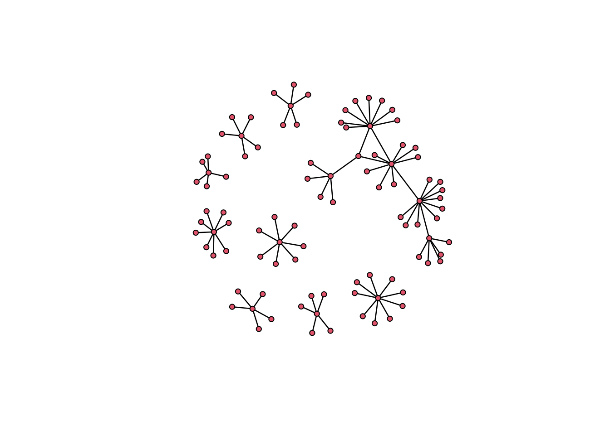
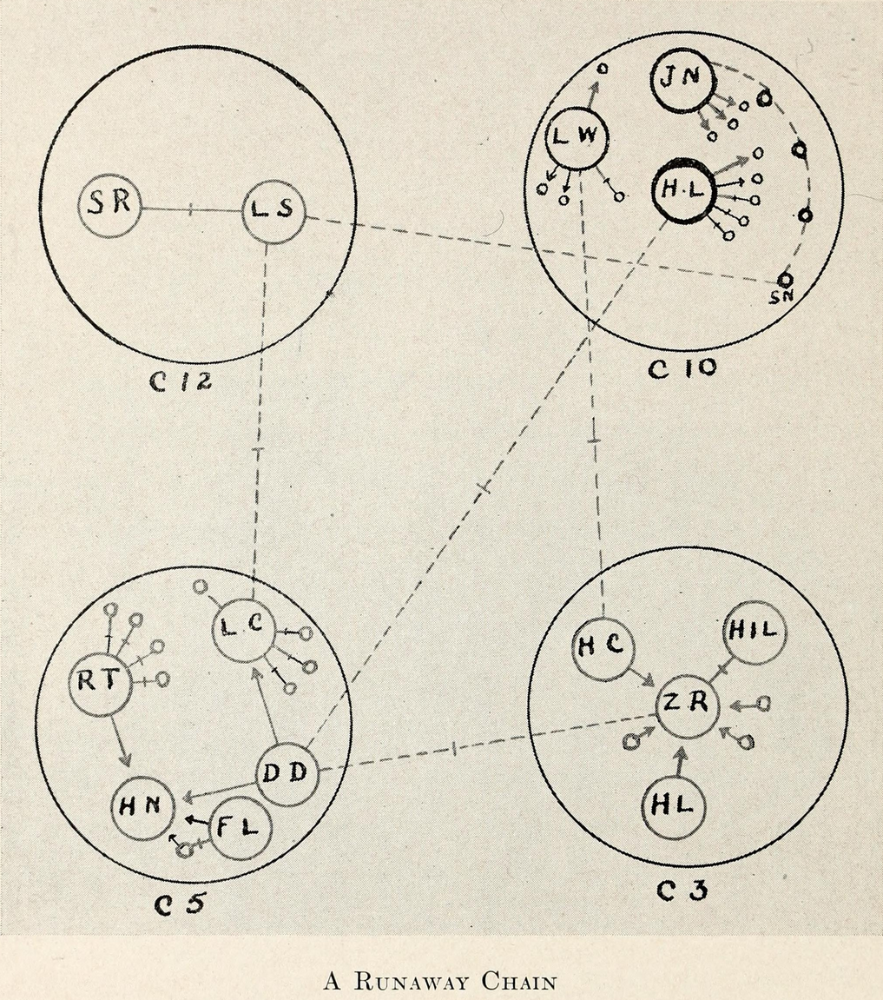

14 Network Analysis
This lesson will introduce the theoretical and logistical underpinnings of network analysis. It will define what networks are, their limitations, and their use cases. It will then cover some of the most commonly used network measures, what they mean, and how to generate them.
After this lesson, you should be able to:
- Explain what a network is
- Explain what is and is not relational data
- Explain the shortcomings and limitations of network analysis
- Evaluate a network dataset and interpret the generated metrics
The examples in this chapter use the following data sets and packages.
For each data set, go to the linked page and click the “Download raw file” button.
Packages:
install.packages("statnet")
install.packages("visNetwork")14.1 What Is a Network?
You are all most likely familiar now with tabular data; rows and columns containing information. It looks like this:
| Person | Name | Age | Widgets |
|---|---|---|---|
 |
J | 30 | 1 |
| Y | 21 | 3 | |
| G | 32 | 4 | |
| Z | 48 | 8 |
While this is a tidy way to store data, it artificially atomizes or separates many of the things we are interested in as researchers, social or otherwise. Network analysis is a tool to work with relational data: information about how entities are connected with each other.
For example, the diagram below shows the same data as the table above, with the added benefit of showing how these individuals are connected to each other. Hover over the people to reveal the data about them.
Rather than looking only at attributes of specific data points, we are looking at the connections between data. In network analysis, data points are called nodes or vertices, and the connections between them are called edges or ties. Vertices can be anything—people, places, words, concepts—they are usually mapped into rows in a data frame. Edges contain any information on how these things connect or are related to each other. These components create a network or graph, defined as “finite set or sets of actors and the relation or relations defined on them” (Wasserman and Faust 1994).
14.1.1 Networks in Research
14.1.1.2 Neuroscience
{kind=link}
Neuroscientists use networks to study the brain, given their ready application to neurons and pathways. Bassett and Sporns (2017) provide an overview of how to translate neuroscience problems into network ones, and the tools available to study them.
14.1.1.3 Chemistry
{kind=link}
Chemistry was quick to see the applications of networks. As early at 1985 papers were published detailing the potential networks provided in terms of understanding and finding new ways to measure and understand the bonds between atoms and molecules (Balaban 1985).
14.1.1.4 The Internet

The internet is a network! Beyond the various social network sites, servers themselves act as nodes and the information flows between them along edges. Google used this property in the first version of their search engine, which used the network metric of PageRank to determine which sites to show at the top of search results (Page 2001).
14.1.1.5 Infrastructure
{kind=link}
Fand and Mostafavi (2019) showed how you can use social media network data to find where infrastructure is failing during disasters, such as hurricane Harvey in 2017. Their system promises a method to monitor physical infrastructure like roads, bridges, and barriers like more easily monitored infrastructure like the electrical grid.
14.1.1.6 Security
{kind=link}
Network analysis has also been used for offensive purposes. One of the most prominent uses is mapping crime or terror networks (Krebs 2002), though it is fraught with ethical concerns. There are specific tools made for this purpose, such as the keyplayer package (An and Liu 2016), which helps find what nodes in a network would fragment them the most if removed.
14.2 Network Data
Networks are based on relational data. This means the core data requirement is that we have some measure of how nodes are connected. The two most common network data formats are the edgelist and adjacency matrix. Either of these will work for nearly any network purpose, and it is easy to convert between them. You will also need an attributes file, which gives information about the nodes being connected.
14.2.1 Edgelist
An edgelist is a two-column data frame with a from and to column. Each row represents one edge or tie, with the possibility of adding in more information. Here’s an example of a basic edgelist:
# Load in the data
toy_edgelist = read.csv(
"data/toy_edgelist.csv", header = TRUE, stringsAsFactors = FALSE
)
# Show the first 10 rows
head(toy_edgelist, n = 10)| to | from |
|---|---|
| b33f00bd1109e1ae3ffa757d0aef0a25942f2ba3 | zuko |
| 19d5b2694036f6fab966564c1c44bc74330f22c2 | zuko |
| 9483b16c4904908115f4538525e37f776f4596d4 | zuko |
| f8452649773eb7e024bfa59c395afa0c302d1928 | zuko |
| eea677240a425ed7ccdeff69feb2d377a5542599 | zuko |
| 9dbcce359070c879f20843e19564aee545f80d2d | zuko |
| 749e81272630eb4755e4a7bca10fe3e3524d77ce | zuko |
| toph | zuko |
| 5737a840aa867025dcb506f24cb5546f16b4d777 | zuko |
| 028f5d1f351d38cd6553ab4674b19725d5ea3d3c | zuko |
14.2.2 Adjacency Matrix
The same data can also be displayed in a table format. The information is the same, but it is presented in a way more usable by our code to create measures we care out. In this format, every node has both a row and column. If there is an edge between two nodes, a 1 is placed in the intersection of their row and column.
| b33f00bd1109e1ae3ffa757d0aef0a25942f2ba3 | 19d5b2694036f6fab966564c1c44bc74330f22c2 | 9483b16c4904908115f4538525e37f776f4596d4 | f8452649773eb7e024bfa59c395afa0c302d1928 | eea677240a425ed7ccdeff69feb2d377a5542599 | 9dbcce359070c879f20843e19564aee545f80d2d | 749e81272630eb4755e4a7bca10fe3e3524d77ce | toph | 5737a840aa867025dcb506f24cb5546f16b4d777 | 028f5d1f351d38cd6553ab4674b19725d5ea3d3c | zuko | |
|---|---|---|---|---|---|---|---|---|---|---|---|
| b33f00bd1109e1ae3ffa757d0aef0a25942f2ba3 | 0 | 0 | 0 | 0 | 0 | 0 | 0 | 0 | 0 | 0 | 1 |
| 19d5b2694036f6fab966564c1c44bc74330f22c2 | 0 | 0 | 0 | 0 | 0 | 0 | 0 | 0 | 0 | 0 | 1 |
| 9483b16c4904908115f4538525e37f776f4596d4 | 0 | 0 | 0 | 0 | 0 | 0 | 0 | 0 | 0 | 0 | 1 |
| f8452649773eb7e024bfa59c395afa0c302d1928 | 0 | 0 | 0 | 0 | 0 | 0 | 0 | 0 | 0 | 0 | 1 |
| eea677240a425ed7ccdeff69feb2d377a5542599 | 0 | 0 | 0 | 0 | 0 | 0 | 0 | 0 | 0 | 0 | 1 |
| 9dbcce359070c879f20843e19564aee545f80d2d | 0 | 0 | 0 | 0 | 0 | 0 | 0 | 0 | 0 | 0 | 1 |
| 749e81272630eb4755e4a7bca10fe3e3524d77ce | 0 | 0 | 0 | 0 | 0 | 0 | 0 | 0 | 0 | 0 | 1 |
| toph | 0 | 0 | 0 | 0 | 0 | 0 | 0 | 0 | 0 | 0 | 1 |
| 5737a840aa867025dcb506f24cb5546f16b4d777 | 0 | 0 | 0 | 0 | 0 | 0 | 0 | 0 | 0 | 0 | 1 |
| 028f5d1f351d38cd6553ab4674b19725d5ea3d3c | 0 | 0 | 0 | 0 | 0 | 0 | 0 | 0 | 0 | 0 | 1 |
| zuko | 0 | 0 | 0 | 0 | 0 | 0 | 0 | 0 | 0 | 0 | 0 |
14.2.3 Edge Weights
Edges can also have weights, meaning some edges are valued more than others. In an edgelist, you can add a third “weight” column, entering higher numbers to denote a more important connection. In an adjacency matrix, you can put numbers other than 1 in the intersection to denote more important connections. For our example, we’ll stick with un-weighted connections for now.
14.2.4 Attributes
Each network also typically has an attributes table, which looks just like typical tabular data, with each row belonging to a specific node in our network. Let’s load in and look at the sample attributes file.
# Load in data
toy_attributes = read.csv(
"data/toy_attributes.csv", header = TRUE, stringsAsFactors = FALSE
)
# Show top of attributes table
head(toy_attributes, n = 10)| id | year | color |
|---|---|---|
| zuko | 2 | purple |
| nezuko | 2 | purple |
| winnie the pooh | 2 | blue |
| toph | 2 | purple |
| chicken joe | 2 | green |
| the rat from ratatouille | 5 | blue |
| spider-man | 3 | blue |
| yamaguchi tadashi | 1 | purple |
| jude sweetwine | 2 | purple |
| lord future | 2 | blue |
14.2.5 Create an Example Network
Before we start exploring specific measures, we’ll create a toy network to use as an example. Let’s start by loading in some packages.
The statnet package is a popular package for network analysis in R. It allows you to compute many of the most common network measures, and run simulations called exponential random graph models. We’ll stick with the basics for now!
# Run this to load statnet, if you need to install it, do so now.
# install.packages("statnet")
library("statnet")Now that we have our tools loaded, let’s create out first network. We’ll use the data you loaded in before. This toy network will be used as a visual for learning the measurements below.
We are going to turn the attributes file and edgelist into a statnet network object. A network object is a special kind of list in R. It is formatted in a way that the other statnet functions expect. While you could edit it like a normal list, it is highly recommended you use the other statnet functions to manipulate this object to make sure you don’t break any of the data expectations.
We’ll use the network function to create our network object. Before we create it, we will sort our attributes file alphabetically. This is super important, as the network object will automatically sort things itself.
If we do not sort our attributes data frame to match, all of our measures later will be misaligned!
# Sort your attributes frame alphabetically. Super important!
toy_attributes = toy_attributes[order(toy_attributes$id), ]
# Make network!
# We will cover the `directed = FALSE` argument soon.
toy_network = network(toy_edgelist, directed = FALSE)Before we move on, let’s add a net_id column to our attributes data frame. This will let us easily check what the network object IDs are for our nodes.
# Add ID column
toy_attributes$net_id = 1:nrow(toy_attributes)We can inspect our new network by calling the summary function on it. Don’t worry too much about the output yet.
summary(toy_network)Network attributes:
vertices = 96
directed = FALSE
hyper = FALSE
loops = FALSE
multiple = FALSE
bipartite = FALSE
total edges = 88
missing edges = 0
non-missing edges = 88
density = 0.01929825
Vertex attributes:
vertex.names:
character valued attribute
96 valid vertex names
No edge attributes
Network edgelist matrix:
[,1] [,2]
[1,] 1 25
[2,] 2 25
[3,] 3 25
[4,] 4 25
[5,] 5 25
[6,] 6 25
[7,] 7 25
[8,] 8 25
[9,] 9 25
[10,] 10 25
[11,] 11 87
[12,] 12 87
[13,] 13 87
[14,] 14 87
[15,] 15 87
[16,] 16 88
[17,] 17 88
[18,] 18 88
[19,] 19 88
[20,] 20 88
[21,] 21 88
[22,] 22 88
[23,] 23 88
[24,] 24 88
[25,] 25 88
[26,] 26 8
[27,] 27 8
[28,] 28 8
[29,] 29 8
[30,] 30 8
[31,] 31 89
[32,] 32 89
[33,] 33 89
[34,] 34 89
[35,] 35 89
[36,] 36 89
[37,] 37 89
[38,] 38 89
[39,] 39 90
[40,] 40 90
[41,] 41 90
[42,] 42 90
[43,] 43 90
[44,] 44 90
[45,] 45 90
[46,] 46 90
[47,] 47 90
[48,] 48 91
[49,] 49 91
[50,] 50 91
[51,] 51 91
[52,] 52 91
[53,] 53 91
[54,] 54 91
[55,] 55 24
[56,] 56 24
[57,] 57 24
[58,] 58 24
[59,] 59 24
[60,] 17 24
[61,] 60 24
[62,] 61 24
[63,] 62 24
[64,] 63 92
[65,] 64 92
[66,] 65 92
[67,] 66 92
[68,] 17 92
[69,] 67 93
[70,] 68 93
[71,] 69 93
[72,] 70 93
[73,] 71 93
[74,] 72 94
[75,] 73 94
[76,] 74 94
[77,] 75 94
[78,] 76 94
[79,] 77 95
[80,] 78 95
[81,] 79 95
[82,] 80 95
[83,] 81 95
[84,] 82 96
[85,] 83 96
[86,] 84 96
[87,] 85 96
[88,] 86 96Then we’ll add the node attributes to the network object. If you run summary again you should see the values from our toy_attributes have been added.
# Add each attribute to network.
# Do this by looking at every column, then adding it to the network
for(col_name in colnames(toy_attributes)) {
toy_network = set.vertex.attribute(
x = toy_network, attrname = col_name, value = toy_attributes[,col_name]
)
}Let’s see what out network looks like!
plot(toy_network)
The default plotting in statnet is ugly. For the sake of our eyes, and for exploring some of the measure we create, we’ll use the visNetwork package to visualize our networks. It will make the code a bit more cumbersome, but it will be worth it. From now on, we will need to use the edges and attributes data frames for plotting. This means we will often need to run commands twice, once for the network and once for the data frames. When you are working with networks for research, you would usually do everything you need on your network, than create a data frame from it all at once. We will need to deal with a bit of redundancy to take things one step at a time.
Let’s try plotting again with visNetwork, using the data frames. We’ll give the visNetwork function our edgelist and attributes data frame. We’ll also tell it to plot the names from our attributes data frame so we can see them when we hover over the nodes in the plot.
# Add pop-up tooltips with names
# visNetwork uses the "title" column to create pop-up boxes
toy_attributes$title = toy_attributes$id
# Plot!
visNetwork(nodes = toy_attributes, edges = toy_edgelist) %>%
visInteraction(zoomView = FALSE)Nice.
14.2.6 Components
Most often when working with networks you want to limit your analysis to one cluster or component, typically the largest one in your network. If segments of your network aren’t connected, you can’t answer many of the relational questions network analysis is good for! Let’s limit our network to the largest component:
# Find what nodes are part of the largest component
toy_network%v%"lc" = component.largest(toy_network)
# Delete those nodes that are not in the network
in_lc = toy_network%v%"lc"
toy_network = delete.vertices(toy_network, which(!in_lc))
# In our data frames
toy_attributes = toy_attributes[
toy_attributes$id %in% as.character(toy_network%v%"id"),
]
in_lc = toy_edgelist$to %in% toy_attributes$id |
toy_edgelist$from %in% toy_attributes$id
toy_edgelist = toy_edgelist[which(in_lc), ]
# Plot!
visNetwork(nodes = toy_attributes, edges = toy_edgelist) %>%
visInteraction(zoomView = FALSE)14.2.7 Limitations of Network Data
Before we move on we should take a moment to talk about some the the caveats when using network data. While powerful, network analysis is particularly picky when in comes to data requirements. I’ll cover the two biggest ones below. You should always keep these in mind when using or interpreting network tools.
14.2.7.1 Missing Data
Network analysis is very vulnerable to missing data. A simple way to understand why is to make a small adjustment to our network. I’ve highlighted one node in green. This node is structurally vital to the network; without it, the shape of the network as a whole will change.
If we remove this node, the network changes in a major way! Imagine these nodes are people, and that missing node is the one person you forget to survey, or was sick the day data was collected. This could massively change the outcome of your analyses. There is some advanced research going on to detect and replace missing data like this if you have enough context, but it is not something to rely on.
14.2.7.2 Network Boundaries
Network analysis is all about looking at the relationships between entities. However, following all connections an entity has can quickly spiral out of hand. For example, if you wanted to map your own social network, where would you start? You would include yourself, then your friends and family, but what about after that? Your friends and family have friends and family, as do their friends and family, and so on. If you are looking at human networks, every human will be included if you look far enough, so how do you decide when to stop?
There is no easy answer. If you are looking at a pre-defined group (for example, this class), you can set the boundaries to include everyone in this class and the connection between them. However, that doesn’t really capture the social networks of people in this class as most people will have friends elsewhere.
Another common method is setting an arbitrary number of “steps” or connections from a target population. If we were interested in a 2-step network from an individual, we would collect all of their relevant connections, and then ask all the people they nominated about their connections. Some sort of justification will be needed as to why you picked the number of steps that you did.
14.2.8 Projected Networks
Often, you will not have individual level network data, but you will have data on group membership. For example, if you wanted to map the social networks of student, but don’t know who they actually hang around with, you may be able to use class rosters to build an approximate network. This is call a bipartite network, two-mode network, or projected network. You can see an example below.
For reference, this is what out projected class network looks like:
14.3 Graph Level Properties
Now that we know what networks are and have some examples of how they are used and the data required, let’s get into actually analyzing them. There are a number of measures we can compute to understand the structure of a network as a whole. We will go over some basic network level ones here. These are single measures or attributes used to describe the entire network, and can be used to compare one network against another.
- Directed or Undirected
- Density
- Centralization
14.3.1 Directed or Undirected
Networks can either be directed or undirected. A directed network treats the edges between nodes as having a specific direction of flow, while an undirected network considers all edges to be mutual. An example of each is presented below.
Both edgelist and adjacency matrix datasets are inherently directed. For edgelists, the sender is often the first column, and the receiver is the second. For adjacency matrices the rows are considered senders and columns are receivers. Directionality is often specified when the network objects are created. When we created our toy network, we specified directed = FALSE to simplify things. If you want a directed network, the default is directed = TRUE for statnet networks.
A directed network tracks which node is the source and which node is the receiver for an edge. Take for example the follow mechanic on Twitter. User A can follow User B, creating a directed edge from A to B, but B does not have to follow A in return. This can be useful when trying to understand the flows of resources that are finite such as money or goods.
# visNetwork uses a column called "arrows" to show directionality in its plots.
# For our edgelist, we'll just say every row is "to" for now
toy_edgelist$arrows = "to"
# This will show us what our network would look like if it was directed.
visNetwork(toy_attributes, toy_edgelist, main = "Directed") %>%
visInteraction(zoomView = FALSE)An undirected network treats all ties as mutual, such that A and B are both involved equally in a tie. An example is the friend mechanic on Facebook. Once a friendship is established, both users are considered equal in the tie. This can be helpful when you do not have information on what node initiates a tie, or when events happen equally to a group of nodes, such as all nodes being connected through co-membership in a group.
# Let's drop the arrow column for now since our network is undirected.
toy_edgelist = toy_edgelist[,c("from", "to")]
# Plot
visNetwork(toy_attributes, toy_edgelist, main = "Undirected") %>%
visInteraction(zoomView = FALSE)Which of these will be useful to you will likely change from project to project. However, it is vital to understand what kind of network you are working with, as many network calculations we will talk about later change their behavior based on if the network is directed or not.
14.3.2 Density
Density is the first real graph level metric that helps you understand what is particular about the network you are looking at. The density of a network is a numerical score showing how many ties exist in a network, given the max possible in that network. Mathematically that is \(\frac{Actual Edges}{Possible Edges}\), where actual edges is the number of edges in the network, and possible edges is the number of edges if every single node in the network was connected to every other node.
Networks that are more densely connected are considered to be more cohesive and robust. This means that the removal of any specific edge or node will not have a great effect of the network as a whole. It also typically means that any one node in the network will be more likely to have access to whatever resources are in the network, as there are more potential connections in the network to search for resources.
To calculate the density of a network, we use the network.density function. You can also see it if you use summary on your network object. Below is our toy network and a less dense version to try and visualize the difference. Density is all about how many edges exist in the network. Notice that there are the same number of nodes in both of these networks.
14.3.3 Centralization
Freeman centralization (usually just called centralization) gives a sense of the shape of the network, namely how node level measures are distributed in a network. We’ll discuss node level measures next, but for now it is only important to understand that node level measures are numeric scores assigned to specific nodes rather than the network as a whole. This means that each node may have a different value.
Consider the two networks below. The first “star” network would be considered highly centralized, as one node connects to all the others, while the rest of the nodes have no connections to each other. This star network would have a edge centralization score of 1, as 100% of the ties are connected with one node. The loop network would have a score of 0, as every node is equally connected to each other.
Centralization is a measure of how unevenly node level metrics are distributed in a network. This is helpful when trying to understand if some nodes in the network have a larger influence, or are is some way more important than others.
14.4 Node Level Properties
Node level measures are numeric representations of a node’s position and importance in a network. There are several common node level measures, and we will go over some of them here. Each measure tries to quantify a different aspect of a node’s position in the network so we can make an argument about why that specific node or class of nodes is important in some way. We will go over:
- Degree
- Geodesic distance
- Betweenness centrality
- Eigenvector centrality
Most node level measures are only helpful within the context of the network they were generated for. This is because the measures are created in part using network level measures like density. This means it is alright to compare one node to another within the same network, but toy should node compare the node level measures between networks.
14.4.1 Degree
Degree counts how many edges are connected to a node. You can count incoming, outgoing, or total (Freeman) degree. Incoming and outgoing degree only matter in directed networks. In undirected networks, only total edges are applicable. Degree gives a very rough measure of how popular or central a node is in the network. If a node has more ties, it may indicate that node as being more central or important the network as a whole.
Degree is a raw count of the number of edges a node has, this makes the interpretation of degree highly dependent on the size of the network. In a small network with only 25 total edges, having 10 of them would be significant. In a larger network with 250 total edges, 10 edges could be less impressive. Degree should thus be interpreted in the cortex of other nodes in the network.
Let’s scale the node sizes of our toy network based on their total degree numbers. We’ll get degree counts for each of our nodes using the degree() function. We can save that into our data frame and network for use later. For now I am naming columns to work specifically with visNetwork, we’ll make a proper data frame for analyses later using data we saved in the network object. In our visualization, you can click on any node to highlight only the edges connected to that node.
# Find the degree of each node and save in the network.
#
# We will use the special `%v%` operator when assigning values to a network.
# `%v%` works like `$` for data frames, allowing you to ask for specific values
# in the network.
#
# In this case `%v%` stands for vertex, and you can use `%e%` if you want to
# work with edges. So let's get the degree counts, and assign them to the
# "degree" variable in our network object
toy_network%v%"degree" = degree(toy_network)
# visNetwork uses the "value" column to determine node size, so let's put it
# there as well for now.
#
# We'll square the values just to make them more distinct
toy_attributes$value = degree(toy_network)^2
# Plot!
visNetwork(toy_attributes, toy_edgelist, main = "Degree Example") %>%
visInteraction(zoomView = FALSE)14.4.2 Geodesic Distance
Geodesic distance is “the length of the shortest path via the edges or binary connections between nodes” (Kadushin 2012). In other words, if we treat the network as a map we can move along, with the nodes being stopping places and the edges being paths, the geodesic is the shortest possible path we can use to walk between two nodes.
Nodes that on average have a shorter geodesic distance between all the other nodes in the network are considered to have have greater access to the resources in a network. This is because a node with a low average geodesic distance can theoretically “reach” the other nodes with less effort because it does not need to travel as far.
To find the mean geodesic distance for each node in the network we will first need to find the geodesic distance from each node to every other node, then take the mean. Not super difficult, but there isn’t a single function to do it for us. First we will use the geodist function to get all the geodesics.
# Get all the geodesics
# I use the $gdist so we only get geodesics not counts
geodist(toy_network)$gdist [,1] [,2] [,3] [,4] [,5] [,6] [,7] [,8] [,9] [,10] [,11] [,12] [,13]
[1,] 0 2 2 2 2 2 2 2 2 2 3 3 3
[2,] 2 0 2 2 2 2 2 2 2 2 3 3 3
[3,] 2 2 0 2 2 2 2 2 2 2 3 3 3
[4,] 2 2 2 0 2 2 2 2 2 2 3 3 3
[5,] 2 2 2 2 0 2 2 2 2 2 3 3 3
[6,] 2 2 2 2 2 0 2 2 2 2 3 3 3
[7,] 2 2 2 2 2 2 0 2 2 2 3 3 3
[8,] 2 2 2 2 2 2 2 0 2 2 3 3 3
[9,] 2 2 2 2 2 2 2 2 0 2 3 3 3
[10,] 2 2 2 2 2 2 2 2 2 0 3 3 3
[11,] 3 3 3 3 3 3 3 3 3 3 0 2 2
[12,] 3 3 3 3 3 3 3 3 3 3 2 0 2
[13,] 3 3 3 3 3 3 3 3 3 3 2 2 0
[14,] 3 3 3 3 3 3 3 3 3 3 2 2 2
[15,] 3 3 3 3 3 3 3 3 3 3 2 2 2
[16,] 3 3 3 3 3 3 3 3 3 3 2 2 2
[17,] 3 3 3 3 3 3 3 3 3 3 2 2 2
[18,] 3 3 3 3 3 3 3 3 3 3 2 2 2
[19,] 3 3 3 3 3 3 3 3 3 3 2 1 2
[20,] 1 1 1 1 1 1 1 1 1 1 2 2 2
[21,] 3 3 3 3 3 3 3 1 3 3 4 4 4
[22,] 3 3 3 3 3 3 3 1 3 3 4 4 4
[23,] 3 3 3 3 3 3 3 1 3 3 4 4 4
[24,] 3 3 3 3 3 3 3 1 3 3 4 4 4
[25,] 3 3 3 3 3 3 3 1 3 3 4 4 4
[26,] 4 4 4 4 4 4 4 4 4 4 3 2 3
[27,] 4 4 4 4 4 4 4 4 4 4 3 2 3
[28,] 4 4 4 4 4 4 4 4 4 4 3 2 3
[29,] 4 4 4 4 4 4 4 4 4 4 3 2 3
[30,] 4 4 4 4 4 4 4 4 4 4 3 2 3
[31,] 4 4 4 4 4 4 4 4 4 4 3 2 3
[32,] 4 4 4 4 4 4 4 4 4 4 3 2 3
[33,] 4 4 4 4 4 4 4 4 4 4 3 2 3
[34,] 5 5 5 5 5 5 5 5 5 5 4 2 4
[35,] 5 5 5 5 5 5 5 5 5 5 4 2 4
[36,] 5 5 5 5 5 5 5 5 5 5 4 2 4
[37,] 5 5 5 5 5 5 5 5 5 5 4 2 4
[38,] 2 2 2 2 2 2 2 2 2 2 1 1 1
[39,] 4 4 4 4 4 4 4 4 4 4 3 1 3
[,14] [,15] [,16] [,17] [,18] [,19] [,20] [,21] [,22] [,23] [,24] [,25]
[1,] 3 3 3 3 3 3 1 3 3 3 3 3
[2,] 3 3 3 3 3 3 1 3 3 3 3 3
[3,] 3 3 3 3 3 3 1 3 3 3 3 3
[4,] 3 3 3 3 3 3 1 3 3 3 3 3
[5,] 3 3 3 3 3 3 1 3 3 3 3 3
[6,] 3 3 3 3 3 3 1 3 3 3 3 3
[7,] 3 3 3 3 3 3 1 3 3 3 3 3
[8,] 3 3 3 3 3 3 1 1 1 1 1 1
[9,] 3 3 3 3 3 3 1 3 3 3 3 3
[10,] 3 3 3 3 3 3 1 3 3 3 3 3
[11,] 2 2 2 2 2 2 2 4 4 4 4 4
[12,] 2 2 2 2 2 1 2 4 4 4 4 4
[13,] 2 2 2 2 2 2 2 4 4 4 4 4
[14,] 0 2 2 2 2 2 2 4 4 4 4 4
[15,] 2 0 2 2 2 2 2 4 4 4 4 4
[16,] 2 2 0 2 2 2 2 4 4 4 4 4
[17,] 2 2 2 0 2 2 2 4 4 4 4 4
[18,] 2 2 2 2 0 2 2 4 4 4 4 4
[19,] 2 2 2 2 2 0 2 4 4 4 4 4
[20,] 2 2 2 2 2 2 0 2 2 2 2 2
[21,] 4 4 4 4 4 4 2 0 2 2 2 2
[22,] 4 4 4 4 4 4 2 2 0 2 2 2
[23,] 4 4 4 4 4 4 2 2 2 0 2 2
[24,] 4 4 4 4 4 4 2 2 2 2 0 2
[25,] 4 4 4 4 4 4 2 2 2 2 2 0
[26,] 3 3 3 3 3 1 3 5 5 5 5 5
[27,] 3 3 3 3 3 1 3 5 5 5 5 5
[28,] 3 3 3 3 3 1 3 5 5 5 5 5
[29,] 3 3 3 3 3 1 3 5 5 5 5 5
[30,] 3 3 3 3 3 1 3 5 5 5 5 5
[31,] 3 3 3 3 3 1 3 5 5 5 5 5
[32,] 3 3 3 3 3 1 3 5 5 5 5 5
[33,] 3 3 3 3 3 1 3 5 5 5 5 5
[34,] 4 4 4 4 4 3 4 6 6 6 6 6
[35,] 4 4 4 4 4 3 4 6 6 6 6 6
[36,] 4 4 4 4 4 3 4 6 6 6 6 6
[37,] 4 4 4 4 4 3 4 6 6 6 6 6
[38,] 1 1 1 1 1 1 1 3 3 3 3 3
[39,] 3 3 3 3 3 2 3 5 5 5 5 5
[,26] [,27] [,28] [,29] [,30] [,31] [,32] [,33] [,34] [,35] [,36] [,37]
[1,] 4 4 4 4 4 4 4 4 5 5 5 5
[2,] 4 4 4 4 4 4 4 4 5 5 5 5
[3,] 4 4 4 4 4 4 4 4 5 5 5 5
[4,] 4 4 4 4 4 4 4 4 5 5 5 5
[5,] 4 4 4 4 4 4 4 4 5 5 5 5
[6,] 4 4 4 4 4 4 4 4 5 5 5 5
[7,] 4 4 4 4 4 4 4 4 5 5 5 5
[8,] 4 4 4 4 4 4 4 4 5 5 5 5
[9,] 4 4 4 4 4 4 4 4 5 5 5 5
[10,] 4 4 4 4 4 4 4 4 5 5 5 5
[11,] 3 3 3 3 3 3 3 3 4 4 4 4
[12,] 2 2 2 2 2 2 2 2 2 2 2 2
[13,] 3 3 3 3 3 3 3 3 4 4 4 4
[14,] 3 3 3 3 3 3 3 3 4 4 4 4
[15,] 3 3 3 3 3 3 3 3 4 4 4 4
[16,] 3 3 3 3 3 3 3 3 4 4 4 4
[17,] 3 3 3 3 3 3 3 3 4 4 4 4
[18,] 3 3 3 3 3 3 3 3 4 4 4 4
[19,] 1 1 1 1 1 1 1 1 3 3 3 3
[20,] 3 3 3 3 3 3 3 3 4 4 4 4
[21,] 5 5 5 5 5 5 5 5 6 6 6 6
[22,] 5 5 5 5 5 5 5 5 6 6 6 6
[23,] 5 5 5 5 5 5 5 5 6 6 6 6
[24,] 5 5 5 5 5 5 5 5 6 6 6 6
[25,] 5 5 5 5 5 5 5 5 6 6 6 6
[26,] 0 2 2 2 2 2 2 2 4 4 4 4
[27,] 2 0 2 2 2 2 2 2 4 4 4 4
[28,] 2 2 0 2 2 2 2 2 4 4 4 4
[29,] 2 2 2 0 2 2 2 2 4 4 4 4
[30,] 2 2 2 2 0 2 2 2 4 4 4 4
[31,] 2 2 2 2 2 0 2 2 4 4 4 4
[32,] 2 2 2 2 2 2 0 2 4 4 4 4
[33,] 2 2 2 2 2 2 2 0 4 4 4 4
[34,] 4 4 4 4 4 4 4 4 0 2 2 2
[35,] 4 4 4 4 4 4 4 4 2 0 2 2
[36,] 4 4 4 4 4 4 4 4 2 2 0 2
[37,] 4 4 4 4 4 4 4 4 2 2 2 0
[38,] 2 2 2 2 2 2 2 2 3 3 3 3
[39,] 3 3 3 3 3 3 3 3 1 1 1 1
[,38] [,39]
[1,] 2 4
[2,] 2 4
[3,] 2 4
[4,] 2 4
[5,] 2 4
[6,] 2 4
[7,] 2 4
[8,] 2 4
[9,] 2 4
[10,] 2 4
[11,] 1 3
[12,] 1 1
[13,] 1 3
[14,] 1 3
[15,] 1 3
[16,] 1 3
[17,] 1 3
[18,] 1 3
[19,] 1 2
[20,] 1 3
[21,] 3 5
[22,] 3 5
[23,] 3 5
[24,] 3 5
[25,] 3 5
[26,] 2 3
[27,] 2 3
[28,] 2 3
[29,] 2 3
[30,] 2 3
[31,] 2 3
[32,] 2 3
[33,] 2 3
[34,] 3 1
[35,] 3 1
[36,] 3 1
[37,] 3 1
[38,] 0 2
[39,] 2 0This output is just like an adjacency matrix, with row and columns being the network node IDs (net_id in our attributes data frame). Next we would want sum all the columns for each row (so adding up all the geodesics for a node), and divide by the total number of nodes it can have an edge with to get the average geodesic distance for that node. This gives us the average geodesic distance for each node!
# `colSums` gives us the sum of all columns for a row.
# We subtract one from the denominator because a node cannot have a geodesic
# distance with itself.
colSums(geodist(toy_network)$gdist) / (nrow(as.sociomatrix(toy_network)) - 1) [1] 3.131579 3.131579 3.131579 3.131579 3.131579 3.131579 3.131579 2.868421
[9] 3.131579 3.131579 2.947368 2.447368 2.947368 2.947368 2.947368 2.947368
[17] 2.947368 2.947368 2.368421 2.157895 3.842105 3.842105 3.842105 3.842105
[25] 3.842105 3.342105 3.342105 3.342105 3.342105 3.342105 3.342105 3.342105
[33] 3.342105 4.184211 4.184211 4.184211 4.184211 1.973684 3.210526Let’s add this to our network and plot it. We’ll also add color and labels so it’s easier to see what this measure means. The red node has the longest average geodesic distance, and would need to travel through the whole network to reach the nodes on the opposite side. Meanwhile, the blue node has the smallest average geodesic distance because it is located near the middle of the network.
# Add mean geodesic distance to network object
toy_network%v%"mean_distance" =
(colSums(geodist(toy_network)$gdist))/(nrow(as.sociomatrix(toy_network)) - 1)
# Set all node colors in visNetwork to grey as default
toy_attributes$color = "grey"
# Add label as geodesic distance, rounding to 3 digits
toy_attributes$label = round(toy_network%v%"mean_distance", 3)
# Replace min average geodesic with blue, max with red
toy_attributes$color[which(toy_network%v%"mean_distance" == max(toy_network%v%"mean_distance"))] = "red"
toy_attributes$color[which(toy_network%v%"mean_distance" == min(toy_network%v%"mean_distance"))] = "blue"
# Make sure edges are grey too
toy_edgelist$color = "grey"
# Plot
visNetwork(toy_attributes, toy_edgelist, main = "Geodesic Example") %>%
visInteraction(zoomView = FALSE)Note that while there is a correlation between degree counts (node size) and mean geodesic distance, one does not cause the other. This is our first instance of how network structure, not node attributes, can inform us about the nodes in a network. Essentially, looking at the network as a whole can tell us things about the people in it that is lost if we look only at individuals.
14.4.3 Centrality
Centrality scores encompass a wide range of measures computed at the node level. Each tries to understand the importance of a single node within the structure of a network by looking at the nodes connection patterns to other nodes. Any centrality measure can be used to create a network level centralization score like we discussed above. We will go through some of the common centrality measures here, but know there are several more we will not cover.
14.4.3.1 Betweenness Centrality
Betweenness centrality is one of the most common centrality measures. It tries to calculate the extent to which a node acts as a gatekeeper or broker in the network. A broker bridges two otherwise disconnected segments in a network. If there are two parts of a network that would otherwise be broken apart if a node was removed, they would have a high betweenness centrality. The fragmenting of a network is not a prerequisite however, simply acting as an effective “shortcut” in a network can also raise a node’s betweenness centrality. Betweenness is calculated using geodesic distances, and gives a higher score to nodes that lie on more geodesic paths.
The next network plot shows the size of nodes as their degree, with a label showing their betweenness centrality score. Centrality score are usually normalized such that their scores all sum to 1. This way, you can easily compare nodes within the network (but not between networks), and understand how nodes relate to each other structurally. It is possible for a node to have a 0 betweenness score if no geodesic distances pass through them.
Like last time I’ve colored the nodes so that the node with the highest betweenness centrality is red, while the lowest is blue. Compared to distance however, it is considered advantageous to have a high betweenness centrality, as this means that nodes acts as a gatekeeper in the network, which can be a powerful position. Contrast this with having a low mean distance, which meant you were closer to all other nodes.
# Add eigenvector centrality to network object as "norm_betweenness".
#
# We also tell it we are treating our data as undirected ("graph"), rather than
# the default directed ("digraph"), same with `cmode = "undirected"`.
#
# We also say we want a normalized (0-1, sum to 1) score using `rescale =
# TRUE`.
toy_network%v%"norm_betweenness" =
betweenness(
dat = toy_network, gmode = "graph", rescale = TRUE, cmode = "undirected"
)
# Add label as geodesic distance, rounding to 3 digits
toy_attributes$label = round(toy_network%v%"norm_betweenness", 3)
# Reset all nodes to grey
toy_attributes$color = c("grey")
# Replace min average geodesic with blue, max with red
toy_attributes$color[which(toy_network%v%"norm_betweenness" == max(toy_network%v%"norm_betweenness"))] = "red"
toy_attributes$color[which(toy_network%v%"norm_betweenness" == min(toy_network%v%"norm_betweenness"))] = "blue"
# Plot
visNetwork(toy_attributes, toy_edgelist, main = "Betweenness Centrality Example") %>% visInteraction(zoomView = FALSE)14.4.3.2 Eigenvector Centrality
Eigenvector Centrality is commonly known as a measure of “popular friends.” Rather than looking at the network position of a node, it looks at the network positions of nodes connected to it. Nodes with a high eigenvector score will be connected to nodes more prominent in the network. Nodes with low degree can have high eigenvector scores if they are connected to important nodes. In real life networks this can be interpreted as being close to influential others in a network.
I’ve colored the nodes so that the node with the highest eigenvector centrality is red, while the lowest is blue. It is considered advantageous to have a high eigenvector centrality, as this means you are well connected to other popular nodes.
# Add eigenvector centrality to network object as "evc".
#
# We also tell it we are treating our data as undirected ("graph"), rather than
# the default directed ("digraph").
#
# We also say we want a normalized (0-1, sum to 1) score using `rescale =
# TRUE`.
toy_network%v%"evc" = evcent(toy_network, gmode = "graph", rescale = TRUE)
# Add label as geodesic distance, rounding to 3 digits
toy_attributes$label = round(toy_network%v%"evc", 3)
# Reset all nodes to grey
toy_attributes$color = "grey"
# Replace min average geodesic with blue, max with red
toy_attributes$color[which(toy_network%v%"evc" == max(toy_network%v%"evc"))] = "red"
toy_attributes$color[which(toy_network%v%"evc" == min(toy_network%v%"evc"))] = "blue"
# Plot
visNetwork(
toy_attributes, toy_edgelist, main = "Eigenvector Centrality Example"
) %>% visInteraction(zoomView = FALSE)14.5 Network Workflow
We have been taking our analyses one step at a time and plotting them. This is useful for learning, but slightly annoying in practice. Below I’ve aggregated how you would actually run analyses in practice so you can refer to it later.
# Data load
toy_edgelist = read.csv(
"data/toy_edgelist.csv", header = TRUE, stringsAsFactors = FALSE
)
toy_attributes = read.csv(
"data/toy_attributes.csv", header = TRUE, stringsAsFactors = FALSE
)
# Make a network
#
# Sort your attributes frame alphabetically. Super important!
toy_attributes = toy_attributes[order(toy_attributes$id), ]
# Make network!
toy_network_total = network(toy_edgelist, directed = FALSE)
# Largest component
#
# Find what nodes are part of the largest component
toy_network_total%v%"lc" = component.largest(toy_network_total)
# Delete those nodes that are not in the component
in_lc = toy_network_total%v%"lc"
toy_network = delete.vertices(toy_network_total, which(!in_lc))
# In our data frames
toy_attributes = toy_attributes[
toy_attributes$id %in% as.character(toy_network_total%v%"vertex.names"),
]
in_lc = toy_edgelist$to %in% toy_attributes$id |
toy_edgelist$from %in% toy_attributes$id
toy_edgelist = toy_edgelist[which(in_lc),]
# Generate measures
# Degree
toy_network_total%v%"degree" = degree(toy_network_total)
# Mean geodesic
toy_network_total%v%"mean_distance" =
(colSums(geodist(toy_network_total)$gdist)) /
(nrow(as.sociomatrix(toy_network_total)) - 1)
# Normalized betweenness
toy_network_total%v%"norm_betweenness" = betweenness(
dat = toy_network_total, gmode = "graph", rescale = TRUE,
cmode = "undirected"
)
# Eigenvector
toy_network_total%v%"evc" = evcent(
toy_network_total, gmode = "graph", rescale = TRUE
)
# Add back to attributes data frame
# Degree
toy_attributes$degree = toy_network_total%v%"degree"
# Mean geodesic
toy_attributes$mean_distance = toy_network_total%v%"mean_distance"
# Normalized betweenness
toy_attributes$norm_betweenness = toy_network_total%v%"norm_betweenness"
## Eigenvector
toy_attributes$evc = toy_network_total%v%"evc"Finally, we can then look at the network measures for our nodes. This data frame can be used for plotting or further analyses.
head(toy_attributes)| id | year | color | degree | mean_distance | norm_betweenness | evc | |
|---|---|---|---|---|---|---|---|
| 22 | 028f5d1f351d38cd6553ab4674b19725d5ea3d3c | NA | NA | 2 | 3.131579 | 0 | 0.0218579 |
| 15 | 19d5b2694036f6fab966564c1c44bc74330f22c2 | NA | NA | 2 | 3.131579 | 0 | 0.0218579 |
| 30 | 1ae1327030b801f0046278d197378603b51de4b7 | NA | NA | 2 | 3.131579 | 0 | 0.0218579 |
| 67 | 258f00e649e6a452acb67cb9297c88820c05e2a7 | NA | NA | 2 | 3.131579 | 0 | 0.0218579 |
| 65 | 2e9fed34d6b2d42052850b46aeaa97f9fe6542dc | NA | NA | 2 | 3.131579 | 0 | 0.0218579 |
| 75 | 3220545023e21c80db2a4d4e10b3eb4217b90605 | NA | NA | 2 | 3.131579 | 0 | 0.0218579 |
14.6 Network Tools
There are several ways to interact with network data in R. Thus far we have been using a combination of statnet for analysis and visNetwork for visualization. Here we’ll gloss over some other tools and what they are used for. Rather than a comprehensive tutorial, this section is just meant to introduce you to what tools are out there so you can investigate them further if you have a need for them.
14.6.1 Network Models
14.6.1.1 statnet
statnet is one of the two largest network packages in R. It allows you to create network objects and generate the network measures we’ve been looking at this far. statnet’s claim to fame however is it’s ability to run network simulations, called exponential random graph models (ERGMs). These models allow you to keep some aspect of a network constant and generate random networks that fit your specifications. This can help you highlight one structural aspect of a network and prove that, all else being random, it is important.
To learn more about ERGMs, see (Robins, Pattison, et al. 2007; Robins, Snijders, et al. 2007). Learn more on the statnet website.
14.6.1.2 igraph
igraph is the other big network package in R. It has more network measures than statnet, but less robust simulation capabilities. While the same network concepts you’ve learned with statnet will help you understand all networks, the code syntax for igraph is different, so you can’t use the two tools interchangeably. Notably, some functions are named the same in statnet and igraph, so it is advised not to load both at the same time.
Learn more on the igraph website.
14.6.1.3 intergraph
intergraph is a utility package in R to convert between statnet and igraph network objects. This means you can prepare your data in your package of choice, then convert your network and use what tools you need from the other package.
14.6.1.4 tidygraph
tidygraph is a relatively new tool in R, built to use Tidyverse syntax. It can do many of the same basic network analyses of the two older packages, but lacks the breadth of igraph and the simulation capabilities of statnet.
Learn more on the tidygraph website.
14.6.2 Network Visualization
14.6.2.1 Built-in
While we avoided it today, all network packages have built in visualization capabilities that can look nice if you work on it. The advantage of these is that you can use the network objects themselves to pull attributes from the networks for your plots (for example, pull degree centrality from node size).
14.6.2.2 visNetwork
visNetwork can make some nice interactive network visualizations with relatively simple code. This is great for learning and for exploring networks interactively. However, it does have significant downsides. For one, you have to keep separate data frames for your edges and attributes as it cannon run directly on network objects. Most importantly it cannot produce static network images! You will most likely need more static plots than interactive ones. If you can only dig deeply into one tool, this one may not be the best to specialize in.
14.6.2.3 ggraph
ggraph uses ggplot syntax to plot networks. There are several packages that do this in various stages of development. To my understanding, ggraph is the most recent incarnation still under active development.
Learn more on the ggraph website.
14.1.1.1 Social Sciences

One of the first instances of social network analysis was originally published in 1932 as part of Jacob Moreno’s Who Shall Survive (1953). This study used the friendship networks of girls within a reform school to show that the ties between them were a stronger predictor of runaways than any attribute of the girls themselves. Since then, networks have been used widely in the social sciences, but only really picked up as the tools to understand SNA became more available.